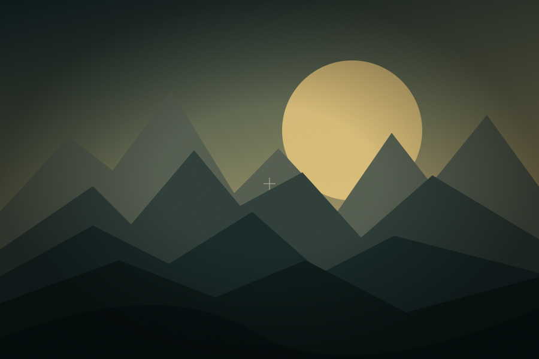
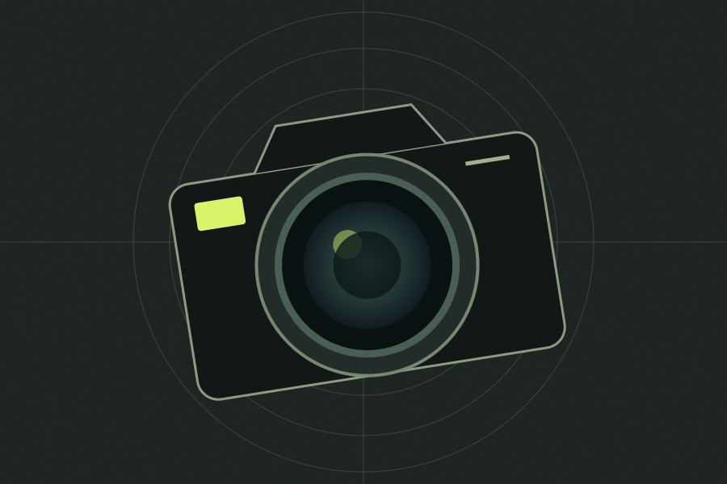

Producción de video
Conceptualización, guion, grabación y dirección visual para piezas creativas, comerciales y documentales.
Hablemos ↗Soy Jadiel Cárdenas, productor audiovisual. Transformo ideas en imágenes, movimiento y experiencias que conectan.

Una selección de fotografías, conceptos y piezas demostrativas para explorar distintos lenguajes audiovisuales.
Un enfoque creativo para cada etapa del proceso audiovisual, desde la planificación hasta la entrega final.
Conceptualización, guion, grabación y dirección visual para piezas creativas, comerciales y documentales.
Hablemos ↗Retratos, producto y narrativa visual con atención a la luz, composición, color y detalle.
Hablemos ↗Montaje, ritmo, corrección de color y tratamiento sonoro para potenciar la intención de cada historia.
Hablemos ↗Animación de logotipos, títulos, contenido digital y gráficos con movimiento para comunicar ideas.
Hablemos ↗
JC / CREATIVE STUDIOSoy Jadiel Cárdenas, productor audiovisual con interés en contar historias a través de la imagen, el sonido y el movimiento.
Me gusta explorar nuevas formas de comunicar, cuidar cada encuadre y combinar creatividad con técnica. Mi objetivo es crear piezas con identidad visual y una intención clara.
Creemos algo juntos ↗